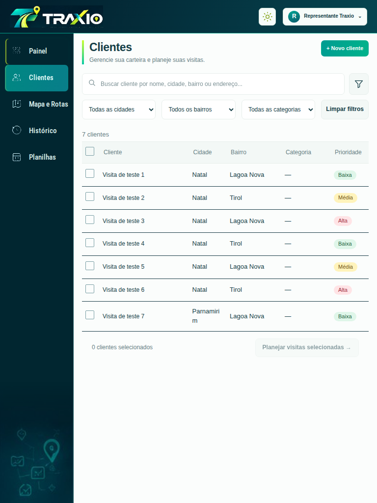
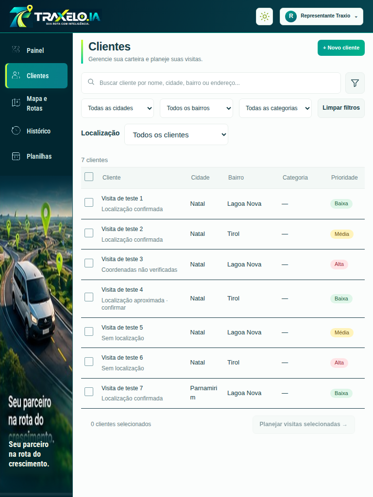
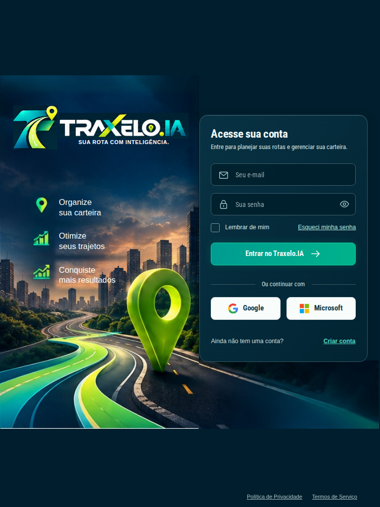

Traxelo.IA — lateral, marca aprovada e clientes confirmados
Comparação com a revisão anterior. As capturas de carteira usam registros isolados de testes; não representam os 157 cadastros reais. A identidade, as imagens de cenário e a paleta foram preservadas. O lettering novo usa os pixels do kit aprovado, excluindo o slogan antigo.
Antes: cenário restrito ao painel e marca antiga
Depois: mesma lateral nas cinco abas e logo aprovada
Na suíte da carteira, os serviços externos são substituídos por respostas controladas. Um mapa vazio nessas capturas não comprova nem invalida o roteamento real. As suítes de ruas reais e do APK instalado consultam os serviços de mapa e rotas e verificam a geometria renderizada.
Login com a marca aprovada

Android instalado
As evidências do APK incluem GPS nativo simulado, teclado Android, rotação, confirmação persistida de localização, percurso em ruas, navegação externa e o novo atalho da carteira. O emulador não substitui uma validação no tablet físico.
Resultados do Android